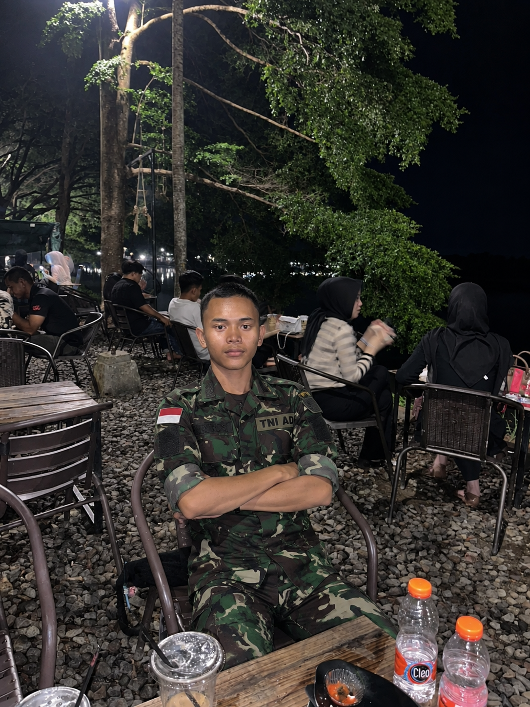

WEBSITE KUKURUKUK XII TKJ 1
MARHABAN di website biodata Kelas XII 1.
Website ini berisi informasi mengenai kelas, wali kelas, dan biodata peserta didik.
Nama Sekolah: SMK SETIA DARMA PALEMBANG
Kelas: XII TKJ 1
Wali Kelas: DIAH BUNGA GITA SARI, S.Kom., Gr.
Tahun Pelajaran: 2026/2027
Kenali lebih dekat teman-teman XII TKJ 1
NIS: 001
Kelas: XII TKJ 1
Jenis Kelamin: BANCI
Hobi: NGONDE
Cita-cita: AHLI NGONDE
NIS: 002
Kelas: XII TKJ 1
Jenis Kelamin: TOMBOY
Hobi: OUTFIT COWOK
Cita-cita: AHLI TOMBOY
NIS: 003
Kelas: XII TKJ 1
Jenis Kelamin: Perempuan
Hobi: Pickme
Cita-cita: Princess

NIS: 004
Kelas: XII TKJ 1
Jenis Kelamin: Laki-laki
Hobi: Futsal
Cita-cita: Triliuner
👨🏫 Wali Kelas:DIAH BUNGA GITA SARI
👥 Jumlah Peserta Didik: 28 orang
🏫 Ruang Kelas: XII TKJ 1
📅 Tahun Pelajaran: 2026/2027
🏆 Motto: Kompak, Kreatif, dan Berprestasi!